Live Watch 功能的使用¶
Live Watch 是一款强大的实时监控工具，专为开发者设计，旨在帮助您更高效地调试和优化代码。通过 Live Watch，您可以即时查看程序运行过程中变量的变化情况，无需打断执行流程或手动添加日志语句。在 Nuclei Studio 2025.02 版中实现了 Live Watch 功能，它支持自动刷新变量值，确保始终看到最新的数据变化。直观的图形化界面，能轻松管理需要监控的变量。
背景描述¶
Live Watch 功能依赖 Nuclei OpenOCD >= 2025.02 版本，并且仅支持 Nuclei CPU 配置了 RISC-V SBA 功能。通过 Live Watch，开发者可以在调试过程中实时监控变量的变化，帮助快速定位问题并优化代码性能。
解决方案¶
环境准备¶
Nuclei Studio：
Nuclei OpenOCD：
- 确保安装的 OpenOCD 版本 >= 2025.02，并且支持 RISC-V SBA 功能。
Live Watch 使用演示¶
step1：导入 Nuclei SDK 原始工程和烧写开发板
优化前的工程下载链接 u900_helloworld.zip
bit文件 trace-u900_best_config_ku060_16M_e85631d489_e82e2771f_202409232110_v3.12.0.bit
下载 zip 包后，可以直接导入到 Nuclei Studio 中运行 (导入步骤：File->Import->Existing Projects into Workspace->Select archive file->选择zip压缩包->Finish即可)。
给ku060开发板烧写上面的bit文件。
step2：编译 Nuclei SDK 原始工程
编译原始工程，确保编译成功以及在 Debug 下可以找到生成的 elf 文件：
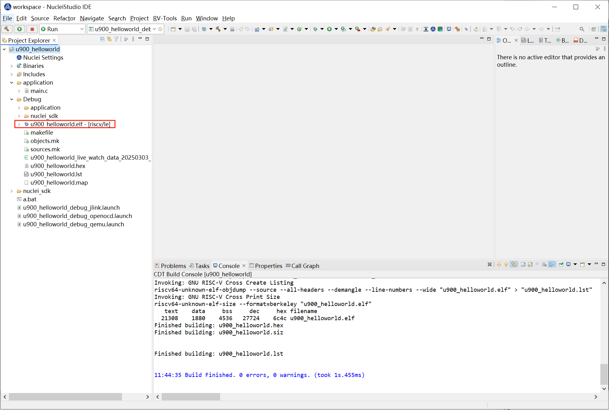
step3：打开 Live Watch 视图
打开 Live Watch 视图，找到 Live Watch Settings 并根据需要设置相关参数（无可不设置，直接使用默认值）。
通过 Nuclei Studio 菜单 Window -> Show View -> Live Watch 可以打开 Live Watch 视图。Live Watch 视图提供了一系列功能菜单，帮助用户更高效地管理和监控变量：
- Remove：删除 Live Watch 视图中指定的变量行。
- Remove All：清除 Live Watch 视图中所有添加的变量。
- Show Live Plot：显示 Live Plot 视图，用于对采样的数据进行实时绘图。
在隐藏的菜单栏中，有两个设置菜单用于配置全局属性：
- Live Watch Settings：
- Live Watch Speed：设定 Live Watch 的采样频率，最快为 100 ms 每次。
- Live Watch Variable Limit：限制同时采样的变量数量，最多为 10 个。
- Live Plot Limit：设定 Live Plot 同时绘制的最大样本数，最多同时绘制 10 个样本。
- Save Data Path：指定 Live Watch 采样的数据自动保存路径，供后续分析使用。
- Save Data Speed：设定 Live Watch 数据自动保存的频率，默认为每 10 分钟保存一次。
- Number Format：Live Watch 视图变量的值的显示方式。
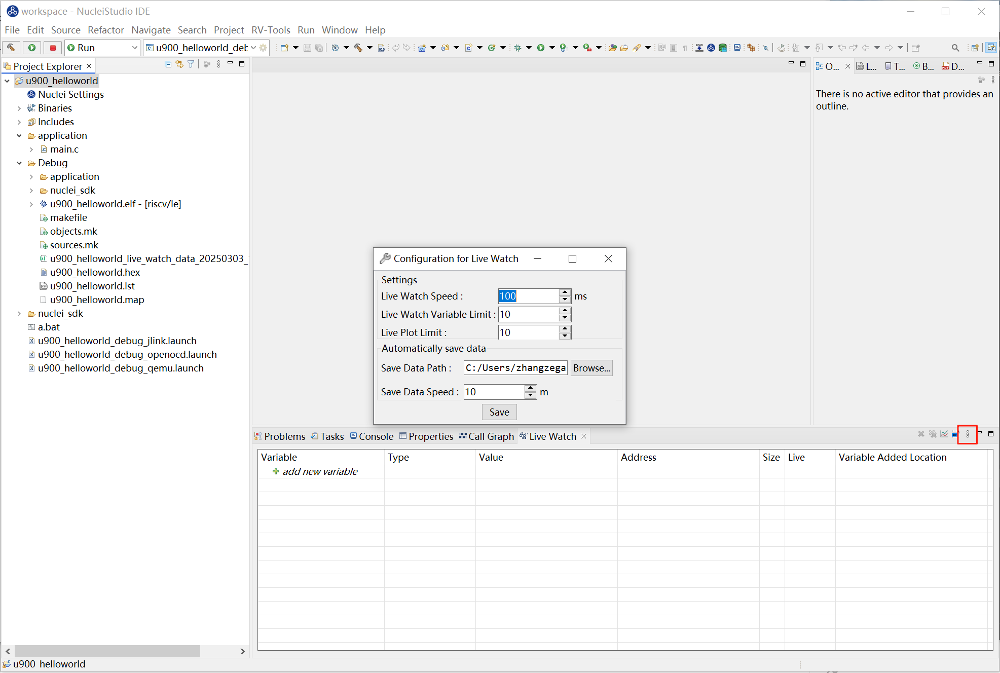
step4：运行Nuclei SDK原始工程
Debug运行程序，在Live Watch视图中添加需要查看的变量。
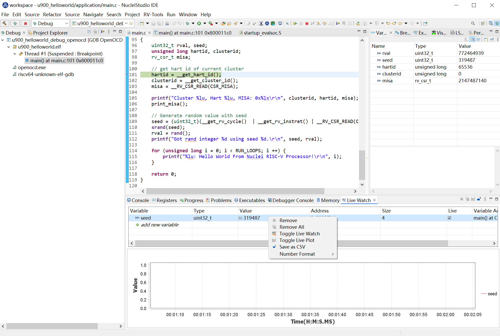
让工程全速运行时，可以看到变量的值，以设定的Live Watch Speed变化，如果想要通过Live Plot查看变量的变化曲线，可以选中该条记录，并点击鼠标右键，在弹出的菜单中选中 Toggle Live Plot ,Live Plot工具就会弹出，并适应的画出变量的变化曲线。
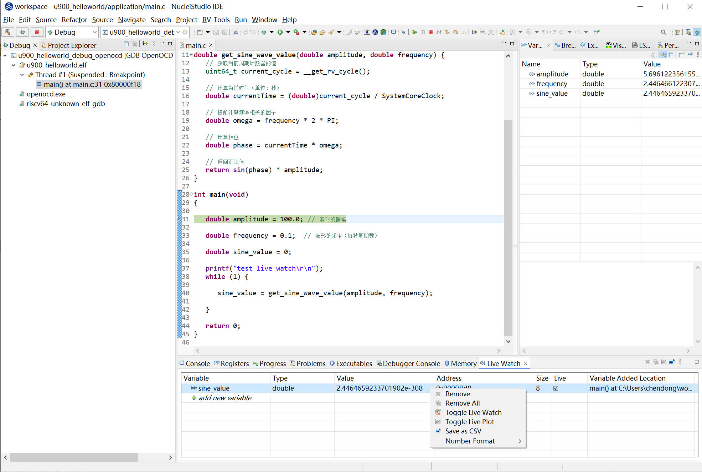
Live Plot绘制的曲线图如下
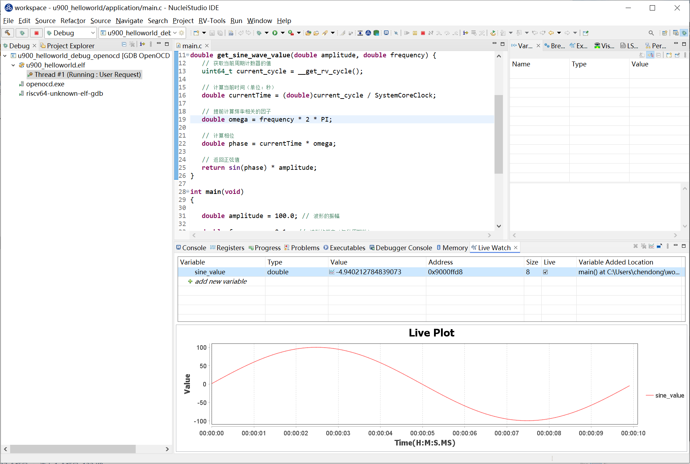
在Live Plot中点击鼠标右键弹出菜单，有 Suspend、Continue 两个功能菜单，点击 Suspend，Live Plot会暂停画图。
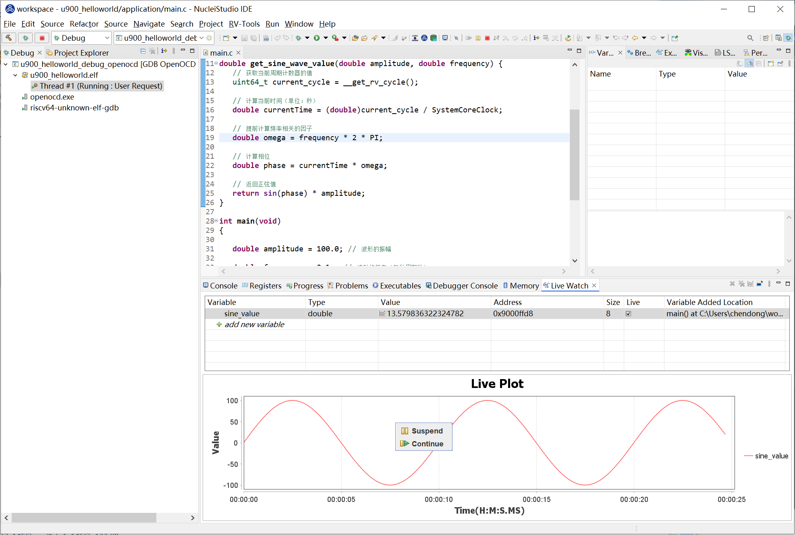
用户可以通过滚动鼠标放大曲线，放大到一定倍数会显示节点，鼠标移至节点可查看数据详情；点击 Continue Live Plot会继续绘制曲线。
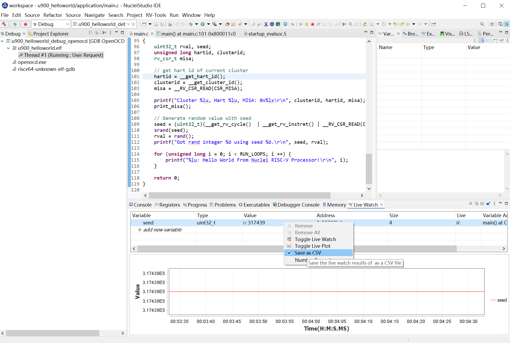
如果不想查看该变量的变化曲线，可以再次点击 Toggle Live Plot ，将该变量从Live Plot踢除。
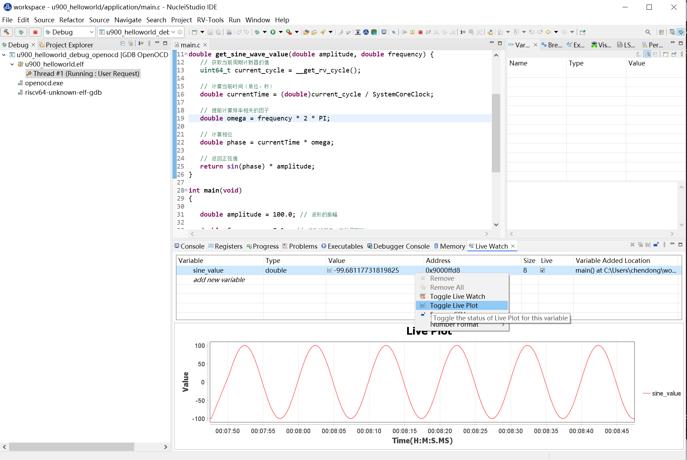
Live Watch视图中的某个变量，点击鼠标右键，可以修改数据显示的格式。
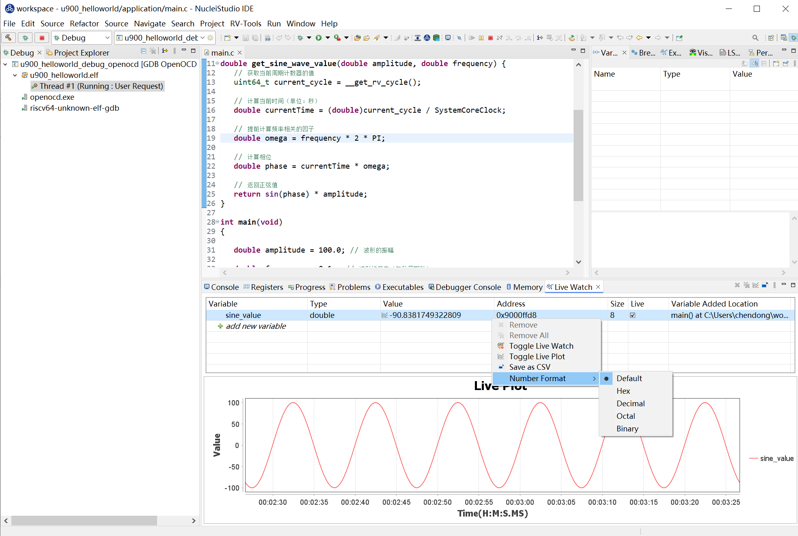
Live Watch视图中的某个变量，点击鼠标右键，将该变量的结果存存为CSV格式文件，方便查阅和使用。

Live Watch也会自动将查询到的数据结果保存到 Save Data Path 中，用户可以在Save Data Path找到对应的CSV格式的数据文件。
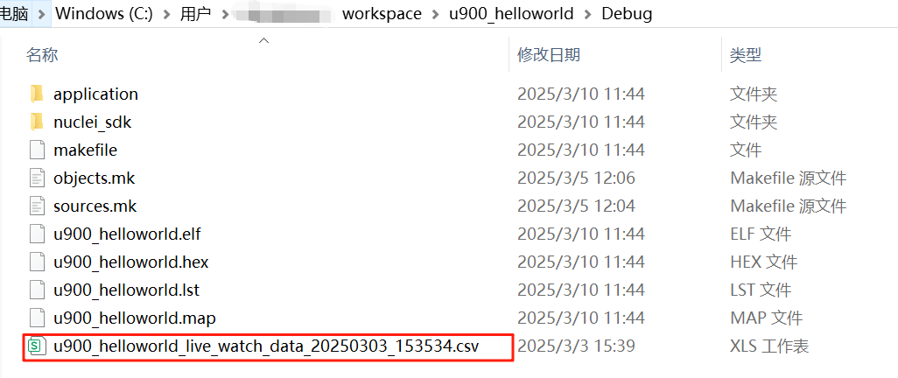
如果不想继续查看该变量的值，也可以选中该条记录，并点击鼠标右键，在弹出的菜单中选中 Toggle Live Watch ,Live Watch就不再适时查询该变量的值。
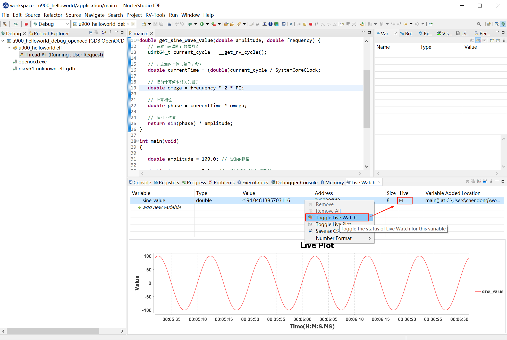
总结¶
Live Watch 功能为开发者提供了一个强大的实时监控工具，极大地提升了调试效率和代码优化的能力。通过合理使用 Live Watch，开发者可以更轻松地应对复杂的调试任务，提升开发效率。